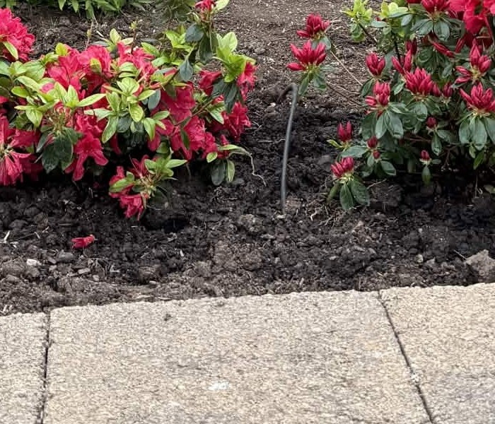
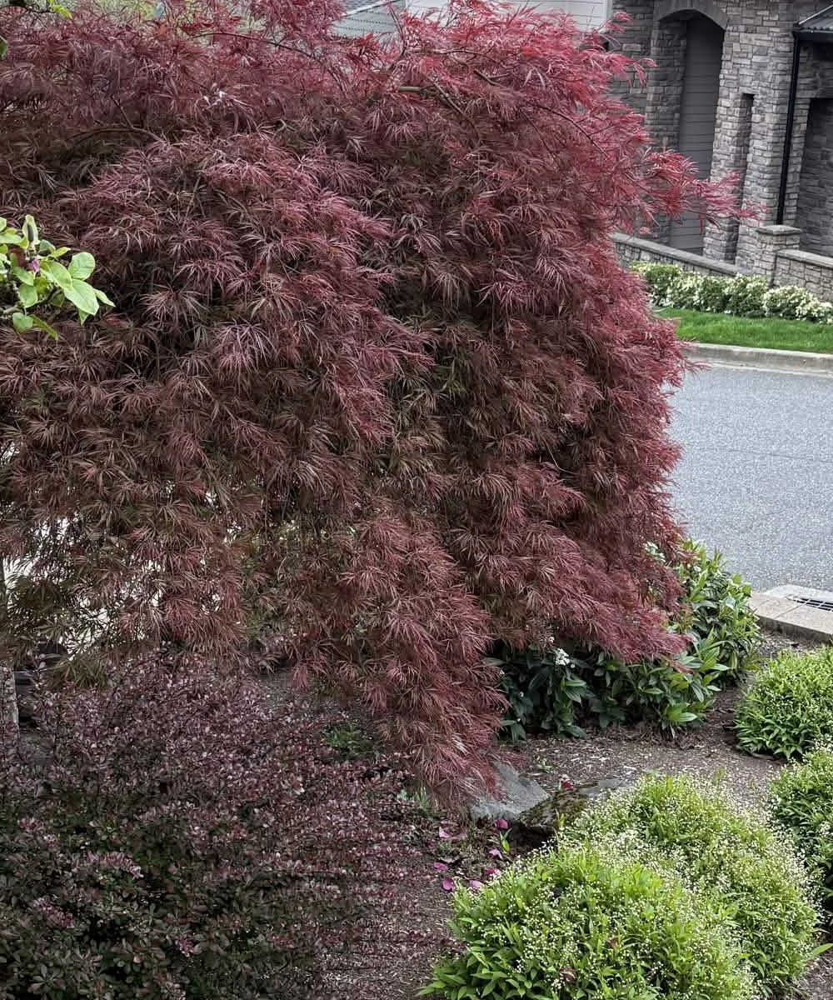

杜鹃花 · 久留米品种Azalea · Kurume
Rhododendron (Azalea)
鲜艳玫红色，花量极丰几乎覆盖整株。半重瓣品种，花瓣如绸缎。花朵3-4cm簇状密集。Vibrant magenta-red, profuse blooms. Semi-double, 3-4cm flowers in dense clusters.
常绿多年生耐阴不需打药
🧡 养护：基本不用管！排水要好；偶尔施酸性肥；波特兰气候完美适合Low maintenance! Good drainage; acid fertilizer; Portland is perfect

日本红枫 · 垂枝型Japanese Maple · Weeping
Acer palmatum var. dissectum
整棵深酒红色，羽状细裂叶如瀑布垂挂。庭院视觉焦点，秋天更红。Deep wine-red, finely dissected leaves cascading. Focal point, turns redder in fall.
观叶落叶乔木不需打理
🧡 养护：夏天干旱浇水，不需修剪Water in summer drought, no pruning needed
🌺 花园条件：朝南 · 山上 · 波特兰🌺 Garden: South-facing · Hillside · Portland
💐
绣球花每1-2天Every 1-2 days⭐⭐⭐
💙
六倍利每1-2天Every 1-2 days⭐⭐⭐
💧 滴灌系统Drip Irrigation：
花园已有滴灌系统！夏天6-9月每天早上开15-20分钟即可。滴灌头插在离根部10-15cm的土里，深度2-3cm，水会自然渗透到根部。浇根不浇叶，减少真菌病。
Garden has drip irrigation! Run 15-20 min every morning Jun-Sep. Place drippers 10-15cm from root, 2-3cm deep. Water roots not leaves.
🌸 春天 3-5月Spring Mar-May
雨水多，基本不用浇Rainy, minimal watering
☀️ 夏天 6-9月Summer Jun-Sep
⚠️ 绣球/六倍利/杜鹃必须定期浇⚠️ Hydrangea/lobelia/azalea must water
🍂 秋天 10-11月Fall Oct-Nov
雨水回来后减少Reduce as rain returns
❄️ 冬天 12-2月Winter Dec-Feb
不用浇，植物休眠No watering, plants dormant
☀️ 注意Note：
花园朝南，夏天下午暴晒。绣球花和蕨类喜欢半阴，可能需要遮阳。浇水时间选早上5-7点最好。
South-facing garden gets harsh afternoon sun. Hydrangea & fern prefer part shade. Water early morning 5-7am.
🌸 花园总结Garden Summary
4种新花 + 2棵大树 + 4种灌木 = 10种植物
粉红（杜鹃+月季）· 蓝紫（绣球+六倍利）· 紫粉（玉兰）· 深红（红枫+小檗）· 蓝绿（柏树）· 翠绿（黄杨+蕨类）
养护：月季需打药，黄杨需修剪，其他浇水就行。省心指数 ★★★★☆
4 new flowers + 2 trees + 4 shrubs = 10 plants
Ease: ★★★★☆ — only rose needs spray, boxwood needs pruning, rest just water.